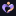
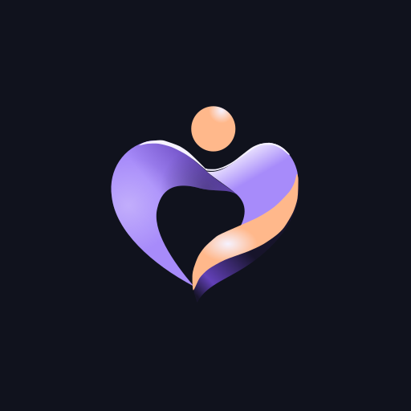

ISSUE 100 · OWNER REVIEW CANDIDATE
Original outlines.
Violet × Apricot.
A — Balanced. One source-derived identity, shown in a responsive Web / PWA header. Provisional colors; no final Brand or Design System approval.
01 / The same contours
Eight paths + one head ellipse. Original outlined names and digits.


02 / Arabic clearance
DP01 candidate correction: move the following lines, preserve every dot and glyph.

Compact headers omit both taglines. Full lockup and compact Arabic proofs are exported separately at intended display sizes. Owner acceptance of DP01 remains required.
03 / Native pixels
One symbol at every size. No optical redraw or hidden simplified icon.

At 16–24px the pale rims and fold soften together. The head, broad violet body and apricot ribbon survive; universal recognition is unproven. Open the 512px native export.


04 / Decision boundary
DP01: layout correction proposed, owner review pending. DP02: OPEN; no replacement Arabic tagline. AP01–AP05 remain owner or medium-specific gates. Brand colors carry no medical status meaning.
NOT TESTED: native browser zoom, screen readers, real devices, installed PWA, WebKit, print or trademark clearance. These specimens do not establish WCAG certification.
Read the audit and owner gate